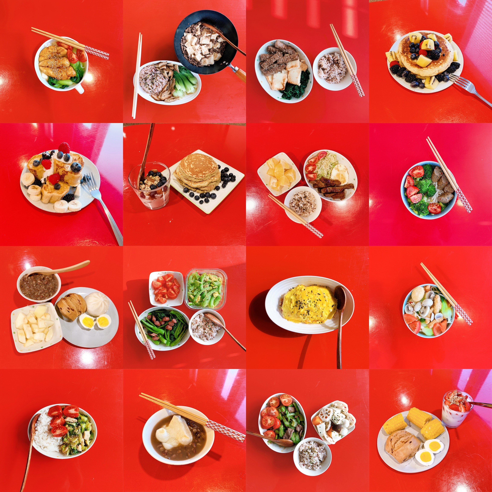
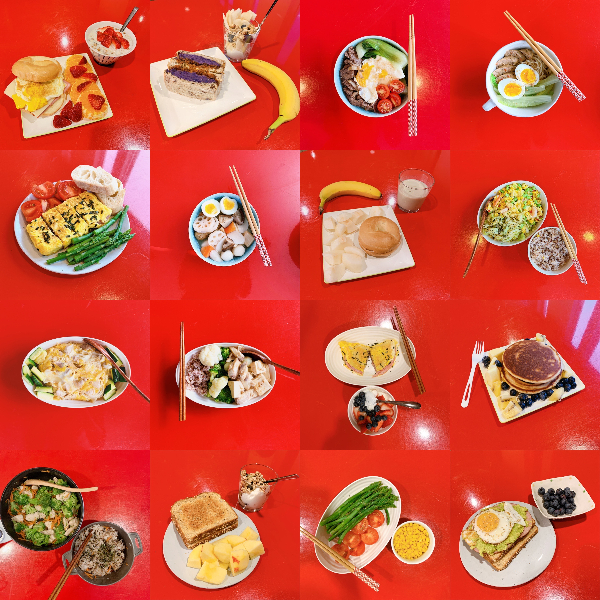

My journey of becoming a cooker
Love with Food
As mention before, I really like to cook. Even though there is no public kitchen in the dorm I live in, I still try to make myself a meal a day with the small electric cooking pot I have. I didn't know how to cook at all four months ago. I only started cooking at the beginning of this school year. I found my passion for cooking when I started posting photos of my food on social media and received encouragement from my friends. I love to see how my cooking skills improved day by day and being a healthy eater.
Below are just a few shots of my "food art." I would take a picture of each meal I cooked. Even though I am from China, I didn't limit my menu to only Chinese food. I have made a lot of Korean and Japanese cuisine as well. I recently learned how to my "Omurice," which is the Japanese Omelet covered rice. Learning new food from different countries become one of my passion in life.
 